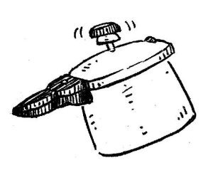
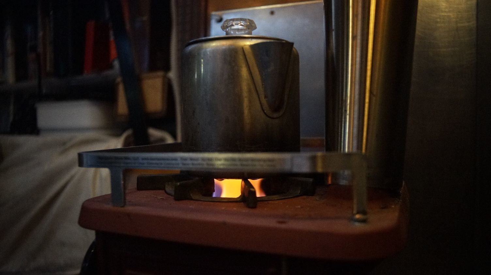
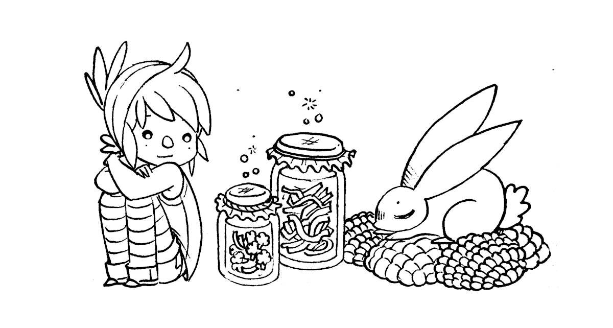
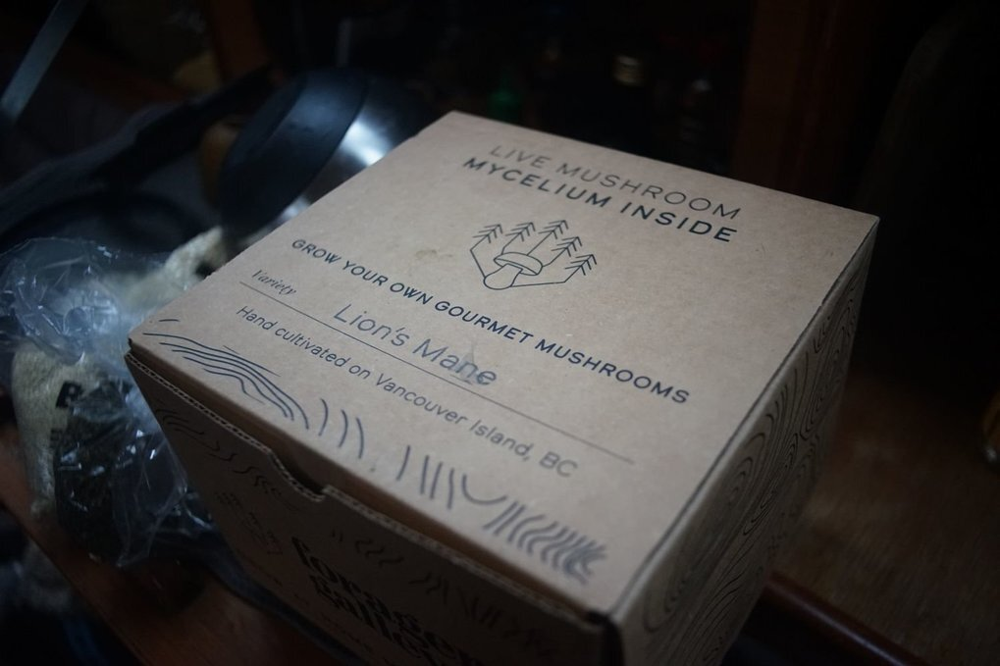
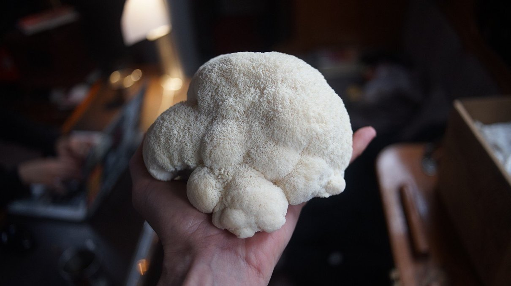
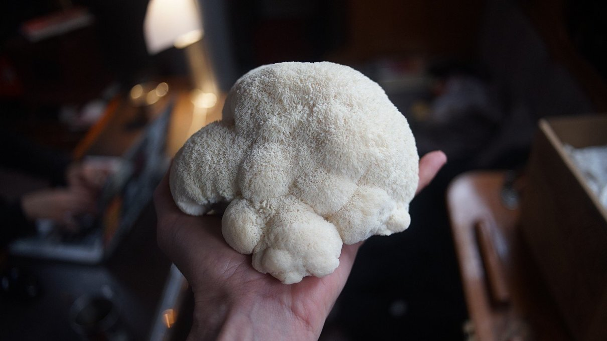

cooking
- our galley
- Our galley tools
- A plantbased diet
- nutrition
- cast iron cookware
- no refrigeration
- washing fresh produce
- saving fuel
- pressure cooker
- insulation cooking
- induction cooking
- solar cooking
- sun driers
- alcohol stove
- lpg
- lacto-fermentation
- sprouting
- growing food
- processing food
- manual food grinder
- storing food
- coffee
- our cooking blog
- carbonation

The doctor of the future will give no medicine, but will instruct his patient in the care of the human frame in diet and in the cause and prevention of diseases.Thomas Edison, 1903
Cooking is another creative outlet, not unlike drawing or writing. We find joy in it. It's an activity that we can do together which we believe is essential for well-being.
galley

Our galley is small, but has enough room for two people to cook. We use a single burner gimballed stove. Since Pino has no refrigeration, we go out shopping for fresh food almost everyday, see our open pantry. When connected to shore power we use an induction plate to save on fuel.
We use our old ice box as a space for bulk containers of liquids, like big 5 L (1.3 US gal) bottles of olive oil, soy sauce, roasted sesame oil, apple cider vinegar, white vinegar etc.
galley tools
As with most things in life, 20% of anything does 80% of the work. When moving into a smaller space, it is important to find that 20% and surround yourself with things purposefully. Single-serving tools and kitchenware will not do.
We choose durable(stainless steel, quality wood), multi-functional and simple (unibody, non-electric) tools.

Ideal materials include glass, wood, cast iron and stainless steel. For cooking, we have:
- Tawashi scrubber
- Large shears
- Claw-shaped can opener
- Ceramic burr coffee grinder
- Bamboo Spatula
- Cast-iron pan (2 sizes)
- Cast-iron pot
- Stainless steel pot
- Medium-sized marble mortar and pestle
- Stainless steel unibody vegetable cleaver
- Stainless steel unibody serrated knife
- Stainless steel julienne slicer
- Stainless steel measuring cups
- Large stainless steel bread making bowl
- Stainless steel stovetop pressure cooker
- Unibody wooden rolling pin
- Potato masher
- Metal mesh grater
- Spong Grinder No 20 (aka meat grinder)
diet

People are fed by the food industry, which pays no attention to health, and are treated by the health industry, which pays no attention to food.Wendell Berry
Our diet consists solely of plants (legumes, fruits, grains, seeds, vegetables etc). The content of our meals depend on the season and our location. We look at the adaptation and adoption of local produce as an exercise in creativity. Most processed food will come thickly packaged, and so to limit our waste we tend to avoid them.
Below is a list of rules that we go by, when it comes to choosing what to eat:
- 1. Eat varied foods. Biodiversity in the diet means less monoculture in the fields.
- 2. Pay more. Spend more for foods grown or raised less intensively and with more care.
- 3. Eat mostly plants. Especially leafy greens.
- 4. Cook, instead of eating out. If you can, plant a garden.
- 5. Avoid processed foods. They cost more, and aren't as nutritious.
- 6. Eat local seasonal ingredients. Roots in the winter, greens in the summer.
- 7. Preserve, and ferment. For health, but also to enjoy foods out of season.
Remember, food ought to be regarded primarily as source of nourishment and pleasure, don't aim for perfection.
We eat a plant-based diet for health, ethical and environmental reasons.
Appropriately planned plant-based diets are healthful, nutritionally adequate, and may provide health benefits in the prevention and treatment of certain diseases. See our detailed guide to plant-based nutrition(GrimGrains).
nutrition

Following a plant-based diet while traveling is very possible. We cannot recommend lactofermentation, and sprouting enough.
General rules:
- Eat at least 4 servings of vegetables per day.
- Eat at least 3 servings of legumes per day.
- Eat at least 4 servings of grains per day.
- Eat at least 3 servings of fruits per day.
- Eat at least 1 serving of seeds per day.
Planning provisions ahead is important, because a lot of the places may not have specialty items. Food items like nutritional yeast, miso, dried legumes, quality wholegrain flour, flax seeds and B12 supplements, are especially hard to find.
Buying a large supply of shelf-stable tofu is always a good idea; it's a product that is high in protein and that can be used to make sauces and sautees while providing calcium (makes sure it has calcium sulfate or calcium chloride in the ingredients list). We recommend carrying whole soybeans to make your own tofu, although it is an activity that is best reserved while near cities because it requires a lot of water to prepare—although it tastes so much better.
Brown lentils are one of the cheapest sources of protein available, and they sprout very well (within 2-3 days).
For iodine, carry iodized salt, or seaweed (wakame or nori).
Other essentials, like omega 6 (LA, linoleic acid), can be found in pumpkin seeds, sunflower seeds for instance, omega 3 (ALA, alpha-linoleic acid) can be found in linseed(flax seeds), soy beans, chia seeds etc. Carry whole flax seeds, and grind them in small quantities. The ground variety turns rancid quickly, it is necessary to keep in the cold.
Staples like nut milks and oats are found everywhere, varying in price and quality. It is sometimes difficult to find nut milk without added sugar or flavorings.
There will always be fresh vegetables available, but the selection can be poor at times. Carrying a dried version of those foods can help, for example: dried mushrooms, radish, seaweed, tomatoes etc. Drying your own fresh is even better, it is a good way to keep fruits while on long passages, but only possible in places with a lot of sun and not too much humidity.
Eating frozen produce can help in a bind. A lot of frozen vegetables don't lose their nutrients, like broccoli for instance. Most places will carry frozen goods, and it's generally cheaper than buying the same item fresh. If like us you lack a fridge, get a bag with insulation or a cooler and keep it in there with other frozen goods. It won't keep forever, but it helps to slow the thawing process.
Read more about plant based nutrition.
cast iron cookware

Cast-iron cookware on a sailboat? Hell yes. Aboard Pino we have 2 cast-iron pans, and 1 cast-iron pot. Our larger pan has an enamel coating on the outside, and was pre-seasoned, the smaller 20 cm(7 in) pan is plain cast-iron (purchased at Komeri in Japan, nothing special about it), and the rice pot(Oigen foundry) is a traditional Nambu tekki(南部鉄器), traditional iron cookware from Iwate, Japan (only cast-iron produced in this area can be called Nambu Tekki). Conveniently, the lid for the rice pot fits over the smaller pan.
How does cast-iron fair on a boat? If you use your cookware often, and maintain them with a coat of oil they will fair fine. Food will not stick on a well-seasoned pan, and this coat doubles as rust protection. Every time you cook with oil in your pan, you're adding another layer to the seasoning.
Cast-iron has good heat retention, ideal when you want to slow-cook food to save fuel (see saving fuel). Another amazing quality of this type of cookware is that it is a good source of iron, because the iron from the pan or pot leeches into the food you cook.

Maintenance: Immediately after use, clean cast-iron cookware with plain hot water and a scrubbing brush (tawashi). Stuck on food can be removed with a paste made of coarse salt and water. Dry with a towel, or over the stove at a low flame/setting, and coat with a layer of vegetable oil. We use canola oil, because it is inexpensive and easy to find. Do not let cast-iron air dry.
Rust? If ever there is rust it is possible to scrub it off, and to effectively rejuvenate them. A good cast-iron pan will last forever, in fact cast iron only gets better with use.
Re-seasoning: If ever you have to re-season your whole pan (too much rust for example), use steel wool to remove the rust, then scrub the pan with soap (fine since it's going to be re-seasoned), rinse and dry well. Coat the inside and outside of the pan with a thin layer of canola oil (if you tilt the pan it shouldn't drip out), and place the cookware in the oven upside down (this helps prevent oil from pooling on the cooking surface). Place a large baking sheet or aluminum foil on the bottom rack. Bake at 205-260°C(450-500 °F) for one hour. Allow to cool completely in the oven.
Highly acidic foods, like tomatoes, can break down the seasoning on cast iron, but it won't be an issue if the pan is well-seasoned.
refrigeration
Refrigeration is a modern convenience we choose to do without, we prefer to limit the use of energy-guzzling devices and to educate ourselves on proper storage of ingredients. Note that we follow a plantbased diet so we cannot advise on storing animal products without a fridge, this section focuses on keeping condiments and fresh produce.
The refrigerated cold chain played a huge role in reshaping the geography of food, removing the constraints of season, climate, and proximity in favour of monocultural economies of scale, astronomical food mileage, and permanent global summertime.Nicola Twilley
General tips:
- Buy veg and fruit without bruises (they last longer)
- Mist summer veg and fruit with water on occasion.
- Wax the stems of aubergines, grapes and melons.
- Buy never-refrigerated veggies whenever possible.
- Eat items with a shorter shelf life first.
- Buy in-season produce.
- Separate foods that release ethylene from those sensitive to it.
- Never wash berries until just before use.
We look at our inventory of fresh foods daily, and eat items with a shorter shelf life first, like fresh herbs and greens. Then, we move on to tomatoes, eggplants, and onto carrots and beets. In the end, we're usually left with onions, garlic, cabbage, potatoes and pumpkins. Potatoes and onions will last months if kept in a dark dry place, and some fruit will last a while if wrapped in towels, foil or newspapers.
To read more about keeping fresh produce without a fridge, read the article Food Storage Beyond the Refrigerator by Low Tech Labs, they go in-depth on how to store everything. We use this as a reference for storing our produce. See our open pantry(pictured above).
Condiments like soy sauce, vinegar and mustard will keep well outside the fridge, but keep them in a dark cool place to preserve their flavor. If exposed to high heat and moisture for long periods they can spoil, but the color, flavor and odor will change. Maple syrup, soymilk, ketchup/salsa, and jam will also keep for many weeks outside of the fridge if kept away from light in a cool place, but will rot fast if the temperature is too warm.
In the winter, we store perishables in the insulated space under our sink(under the waterline). We built a small shelf to make storage possible. We keep items in this space in the summer as well, but we have to go through them faster.
What we buy in the winter varies from what we buy for the summer. For example, in the winter we buy soymilk in 1.89 L cartons, but in the summer we must buy smaller 946 ml cartons. The smaller cartons cost more, but larger amounts will spoil, and then we're not saving money. In the winter we eat fresh kale, but buy kale powder to incorporate into meals in the summer. Some nutrition is lost when the kale is dried, but it is still a good source of nutrients[Source], especially when no fresh kale is available.

Tofu is very temperature sensitive, we usually try and eat them up within 2 days. We store the leftover block in water in a closed bowl and keep it under the sink. Tetra-pak tofu is shelf stable keeps for many months, but requires the same treatment as regular-packed tofu once opened. When sailing in Japan we loved buying kouya-doufu(高野豆腐), a type of freeze-dried tofu that resembles a hard sponge which you must re-hydratefor 5 minutes, and then firmly press before using. Because kouya-doufu is dry it is very light to store(no water weight), and keeps for a long, long time.
Relying on the selection of local and seasonal produce from farmer's markets makes us discover new ingredients, while it encourages local vendors, and cuts down on emissions from transport. Alternatively, making preserves and ferments (see lactofermentation) allows us to enjoy some foods out of their season. In New Zealand, a friend once gave us feijoas that we processed into chutney which we had the following year.
When spending a long time away from shore, you may run out of both fresh and fermented vegetables, in such cases sprouting is an essential habit to pick up. Just a few tablespoons of moistened dried mung beans, brown lentils, fenugreek and/or radish seeds will sprout and fill a jar within 3 days. We buy the beans/legumes and seeds in bulk and mix them up in a smaller jar to use for sprouting(read our detailed guide on sprouting).
We eat leftovers the next day, incorporating them into other meals to offer some variety. Preparing food in the pressure cooker, and letting it rest unopened will help preserve the food. If left overnight, reheat it in the morning, it will keep well until lunchtime.
Read the anti-fridge and Save Food From the Fridge.
washing produce

After buying fresh produce at the market we wash everything in a bucket using a water and baking soda solution. If there's a lot of dirt, we scrub them with a brush. The mechanical rubbing action and rinsing is very good at removing contaminants. Then finally, we rinse them off with fresh running water running our pressure sprayer (to conserve water, pictured above) and let them dry in the sun. They need to be completely dry, otherwise they may rot faster (moisture accelerates rot).
Washing produce in baking soda prevents some foodborne illness and can reduce exposure to pesticides, it is more effective than using a vinegar solution (because it needs to be used full-strength, and that can get expensive). This washing technique is the same for fresh greens and fruits, although for berries it is best to wash them right before eating them.
saving fuel
When at sea on a long passage between continents, far from everyone and everything, we manage resources onboard with care. Being frugal with water, food and energy ensures that there is enough for the duration of the trip. When cooking, we monitor our fuel usage and use several techniques to require less. Cooking fuel may be easy to get when near shore, but earth's tanks are not infinite, it's easy to forget because of the planet's huge mass, and energy conversion systems. We can all benefit from adopting energy-saving cooking techniques. It saves money, while extending its use.
Aboard Pino we use LPG, but we have experience with both alcohol stoves and induction cooking. Over the years we’ve experimented with ways to use less energy. The following advice is also relevant to those using electricity for cooking.
General energy-saving tips:
When cooking, the heat from the stove is transferred to the pot, and most types of cookstoves suffer energy losses. Higher efficiency can be achieved by minimizing the loss of heat to the surroundings, and by ensuring that there is a maximum transfer of heat from the source of heat to the pot.
- Use a lid. You will stop steam from escaping the pot, the steam is energy lost to the cooking process.
- Use a pot skirt. A simple ring around the base of the pot, will help to preserve and concentrate heat.
- Focus on the task. Obvious, but when distracted we use up more energy. Concentrate on the task, pay attention to cooking times so as to not overcook the food. We keep a cooking timer when cooking things like rice.
- Use less water. The less water used, the less energy is required to heat up the meal. On a boat with limited tankage, using less is better anyway.
- Reduce intensity after boiling. After boiling point is reached, lower to a simmer or transfer to an insulated cooker (see below). Shorter cooking times also prevents nutrient-loss in many foods.
- Cut food small. Chinese cooks use this technique, they cut vegetables small so they cook fast in a stir-fry. Smaller cuts have more contact area and will soften quicker, take up more flavor and use less energy.
- Pre-soak dry food. Legumes, grains and other kinds of dried food will cook faster when pre-soaked, don’t skip that step. We like to soak steel cut oats before bed, then it takes just 5-10 minutes to cook, rather than 20-30 minutes. The shorter time results in chewier oats (our personal preference).
- Lacto-ferment vegetables. Unlike canning, vegetables preserved in brine uses no fuel. The long fermentation period makes the veg easier to digest, keeps vitamins intact, while giving the veg a pleasant and complex flavor. Read more about lactofermentation.
- Sprout seeds and legumes. Sprouting transforms dried foods into fresh foods, while reducing anti-nutritional compounds in raw legumes making more of their nutrients available. Sprouting also halves cooking time. Read more about sprouting.
- Cook with the sun. Uses zero fuel, only requires careful planning. See solar cooking.
pressure cooker
Foods that require 60 minutes on the stovetop will take 10-15 minutes in a pressure cooker. Pressure cookers are airtight containers, designed to allow pressure to build-up beyond atmospheric pressure.
We cook entire meals at once, for example we’ll place ingredients for chili in the bottom of the pot, with a trivet overtop with a covered bowl of rice and water. The whole meal is ready in 10 minutes.
Pressure cookers are generally quite big, and double as a big pot(we use ours to boil corn).
insulation cooking

There are insulation cookers on the market, but it is possible to make one for cheap by using thick blankets or a sleeping bag. To make a quick insulated space, use a plastic bin, or wooden crate, and fill it with thick blankets or a sleeping bag, leaving a deep well in the center. Insert the pot in the well and cover with more blankets. The pot will stay warm for hours.
We have cooked stovetop cakes using this method .
It’s also possible to cook rice in a thermos, by simply pouring hot water over it and leaving it to slow cook.
induction cooking

Induction cooktops are becoming more common on boats. It creates heat rapidly by magnetically inducing an electric current in steel, cast iron cookware and some stainless steel pots. It transfers 90% of its heat to a pot. They use heat efficiently and because they heat the pot material there is less heat loss. Nearly all of the energy is converted into cooking the food. A downside of IH is the high-power draw, which ranges between 1200-1800W for a single plate.
Small diameter pots may not register on the cooktop, if they don't try and put a bigger pot on first, then switch it for the other one. We have to do this for our moka pot, since the cooktop doesn't register anything under 5". Another trick is to put another small pot alongside the other one, but I prefer the 'switch' method.
We used a single IH cooktop while in Japan, since it was difficult to refill an lpg tank. We enjoyed the experience, but we were connected to shore power at the time and would never think to use it while at anchor. Using an IH cooker off the grid is possible, but requires a large battery bank, a larger inverter, and more solar and/or a generator. Smaller boats like ours do not have a large battery bank, or infinite surface for solar. In any case, IH cookers are more energy efficient than conventional electric cookers.
We sold the Japanese model because of the power difference, and bought another model in September 2021 to use while connected to shore power during winters in victoria. It works very well, this is our 4th winter cooking with it (2024.02.15)
solar cooking

The sun provides inexhaustible "fuel", but requires that we follow its schedule, and position in the sky to cook food. How fast the food is cooked depends on how much sun there is that day, and what is being cooked. Beans and wholegrains will require more cooking time, while steaming veggies are done quickly.
Cooking with the sun is akin to using a slow cooker(see also insulation cooking, and can take twice as long to cook food than conventional cooking methods. This is especially true for box cookers.
Advantages:
- If there is sun, you can cook.
- It uses no fuel.
- It uses less water.
- It is smoke-free.
- It is useful in an emergency(power outages, when out of cooking fuel).
- It uses no electricity.
- Has no moving parts.
Things to remember:
- Have to follow the sun's schedule.
- Must be there to re-adjust position of stove to the sun, which may be tricky on a boat on windy days.
- It can take longer to cook certain foods, so taking food out to cook ahead of time is often necessary.
Types of solar ovens
There are many type of solar ovens available, each have their advantages and disadvantages. Not all designs used on land will make sense on a boat.
In a small space size is a factor to consider, because the oven needs to be secured while the boat is underway, and also because a gust of wind can easily knock it over when it is fully deployed and cooking on deck (parabolic solar cookers, while efficient, have too much windage).
If looking for land-friendly designs, they're all listed here.
On a boat, solar cooking options to consider include:
alcohol_stove
Alcohol is a good alternative to LPG. It is a simple stand alone system, without high-pressure lines, sniffers or tanks
There are four common types of stove alcohol: denatured alcohol, ethanol, isopropanol and methanol.
They're found in hardware stores (sometimes), marine, RV and camping stores. For an alcohol stove to burn cleanly, you need the fuel to be at 90% purity(180 proof), or better. All the stove manufacturer means is that the water content of the fuel should be as low as conveniently possible (below 10%).
Best fuels
Denatured alcohol. Basically ethanol(high-proof alcohol) with additives (10-50% isopropyl alcohol, acetone, methyl ethyl ketone, or methyl isobutyl ketone), made to taste bad to discourage people from drinking it.
Other names: methylated spirits, meths, denatured rectified spirit or bio-ethanol.
Ethanol. A high-proof alcohol fuel which can be distilled from a wide variety of biomass feedstock. It is the next best thing, but is often more expensive, and heavily taxed. It burns cleanly, the flame is colorless (be careful) and it is non-toxic.
Other names: ethyl alcohol, ethyl hydrate, grain alcohol or drinking alcohol.
Worst fuels
Isopropanol. Is sold with different levels of purity (70%, 95%, 99% etc), with water added. It is toxic if consumed, it burns with hot flame, the flame is odorless but it leaves dirty residue(stains pots, and can clog burners).
Other names: isopropyl alcohol, propan-2-ol, 2-propanol, IPA and rubbing alcohol.
Methanol. Was once produced by the destructive distillation of wood, but is now mainly produced industrially by hydrogenation of carbon monoxide. It is often added to denatured alcohol to render it undrinkable. It burns cleanly, it has the coolest flame, the flame is colorless and is VERY toxic if ingested. Methanol is absorbed through the skin, stomach, or lungs and much of it becomes formaldehyde in the body, which changes to formic acid in the liver. Formic acid can cause death or damage to the brain or optic nerve leading to blindness.
Other names: methyl hydrate, wood alcohol or carbinol).
Alcohol Stove Instructions:
- Do not fill when hot.
- Do not fill while operating.
- Do not overfill.
- Re-fill away from stove.
- Use a small bottle, with a narrow spout to re-fill fuel. Or one with a safety nozzle.
- Store in closed containers, mainly due to the combustible nature of the ethanol vapour-air mix at certain concentrations, but also due to the possibility of evaporation.
- If using trangia, and flame doesn't go out even when simmer ring is closed, put an upside down metal bowl overtop and wait it out, or put less alcohol into the stove next time. The reason this happens isn't because there is oxygen inside for it to draw from, but because it is hot enough to pressurize and gassifying the alcohol so it squirts out (as a gas). It then finds ambient oxygen and bursts into flame.
Origo model. A non-pressurized alcohol stove performs just as well as LPG. The Origo stove model has either one, or two canisters, that each accommodate 1.2 L of fuel. Each canister lasts 1 week of regular usage, this includes 3 meals a day, plus coffee and tea in evenings. Marine alcohol stoves have fuel cannisters filled with an absorbent material to prevent spillage, an important safety feature if cooking whilst sailing. Fully filled but never used, an alcohol stove canister will dry from evaporation in two or three months.
Stand-alone burner. Our woodstove from Navigator Stoveworks makes a drop-in burner that fits into the stove top. Fuel is added to the burner and ignited. The heat vaporizes the fuel and forces it out of 23 or 24 jets around the top of the burner, where it ignites and produces a steady cooking flame. The burner includes a removable "simmer ring", that partially blocks the flame in order to reduce heat the output. On a 2 oz. filling of alcohol the flame will run for 20 min.
We found an Origo Stove for cheap in 2020 with plans to switch away from lpg if we enjoyed the experience, but we found that denatured alcohol was very hard to find, and expensive to get in Canada. We did enjoy cooking with alcohol though. We sold the Origo and instead bought a secondhand drop-in alcohol burner for our woodstove. The drop-in takes up less room, and has fewer parts that can degrade or fail.
In Canada people burn methyl hydrate(methanol) because its cheap and found everywhere, but we don't like the idea of handling this poison. We plan to use our drop-in burner in the summer, but only ever with denatured alcohol or ethanol. Both of these options are more expensive, but we are not willing to compromise our health.
lpg

In our galley, we use LPG (Liquefied petroleum gas) to cook by way of a gimballed stove. While not an ideal fuel, there are few alternatives for sailboats. In 2022, we replaced all of the parts of our LPG system, and we built on our gimballed stove, for more information see lpg refit, gimballed stove and lpg fume detection system.
How long does a tank last? We've carried both a 9 kg (20 lbs) and a 5 kg (11 lbs) tank. A 5 kg tank can last us two months, less if we bake a lot, and a 9kg (20 lbs) tank which can last us anywhere between 4-5 months. The tank will not last as long if it is cold outside(3 1/2 months), because we boil water often for tea, or to prepare warm foods.
Tank refills. Some ports offer refill services on the dock, others require that you walk the tank to a nearby store. Many places will only do tank swaps(more expensive than filling a tank, but more common in places like Canada). We carry the tank by foot to refill it most times, or ask friends for a ride when the refill/swap station is out of range. Some marinas in other countries will handle the transport for LPG tank refills for mariners(true in La Paz Mexico). We have carried an 11 lbs tank in a backpack in the past, but it is a bit stressful to carry a pressurized tank on your back. Many countries don't want to refill foreign tanks, especially if they have an aged appearance. Throughout our travels we had to give up 3 tanks, 1 in New Zealand and 2 in Japan.
Our setup. Our main tank lives in its own locker aft of the boat, with a drain hose leading down and off the stern. In the event of a leak, the gas will escape from this hose rather than filling the compartment and slipping down into the bilge. Our boat has a solenoid valve with a gas shut off that we can operate from inside the cabin, it is fitted with a sniffer and alarm to detect leaks. For safety, solenoids close in the event of a power failure. An LPG tank should never be stored inside. We store our secondary tank off the aft rail on a little platform we built(2023 update: we no longer require a secondary tank, we use a small alcohol burner as a backup).
Tank compability. In 2022, we switched out all of the old components of our propane system (regulator, solenoid, pressure gauge and hoses) because they were thoroughly rusted (solenoid and pressure gauge, especially). The pigtail that connects to the propane tank though is different, and screws onto the mouth of the valve from the outside, rather than from the inside, unlike our older connector. Our Japanese tanks can only take an inside connection. Be mindful of this when changing systems, industry standards change.
Tank swaps. Many countries use a 'tank swap' system. You bring your tank when it is finished and swap it with another. This is a good system because the tanks are often made of painted steel and can corrode over time, especially if exposed to salt air. When swapped at a store, the steel tanks are re-painted and checked for problems, eliminating the need to do those checks yourself.
Keeping your own propane tank. If you prefer to have your own tank, a good alternative are aluminum or fibreglass tanks—although many places won't want to fill fibreglass tanks. If using your own tank for a while, you might run into issues with an overfilled tank (it happened to us). When exposed to the sun on a hot day (if the tank is outside), the gas inside of the tank expands and will open the pressure release valve. Some LPG will escape from the valve to relieve the pressure in the tank. Don't handle the tank as it is off gassing. If the smell bothers you, pour some cold water over the tank to help it cool faster. The pressure release valve will close when the pressure has lessened, but may not with a faulty tank. To check for leaks on your tank, pour some soapy water over the tank. Bubbles will form around the leak.
Troubleshooting
LPG burner has an orange flame? A regular propane flame ought to be blue, an orange flame indicates incomplete combustion, there are many reasons why this can happen but a common one is debris clogging the burner. For debris, remove the burner and check for particles.
LPG flame sputtering? Check the burner for debris, accumulations of carbon which might be clogging the burner. Other reasons include low propane pressure, faulty gas valves airflow obstruction, etc. Always check for clogging in the burners first, it happens a lot and it is an easy fix.
sun_driers

Dehydrating fresh foods when they are in season is another way to save energy, it also reduces the volume of food, saving precious space and weight on board. Drying food with the sun on a boat is more efficient in warm places.
When drying food, pick quality produce, and wash items well. This website has good information. Pre-treating certain fruits(apples, apricots, peaches, and pears) with ascorbic acid(2 ½ tbsp:1 quart water), citric acid(1 tsp:1 quart cold water) or lemon juice(1:1 cold water) will help preserve their nutrients and color. Soak for 10 minutes, then remove with a slotted spoon, drain and proceed to dehydrate.
There are solar driers on the market, but building one is inexpensive, and requires few parts. It consists of layering shelves made with screens (to allow air to pass all around), and covering it with a net to protect from insects. When insects aren’t an issue, another solution is to string the pieces of food with a strong thread and to hang them in the sun (may not work well on windy days). In Japan, this is the technique used to dry entire hachiya persimmons, but the process for an entire fruit is longer, and can take eight weeks of drying and massaging, maybe not a good idea for a cruising yacht. Cutting fruit into small pieces will hasten drying. The higher the water content, the larger the slice size should be.
We experimented with drying bananas and vegetables on deck while in Fiji, using a wide metal bowl we had onboard. It worked well enough, but we had to flip the pieces often to dry them well on both sides. This technique is not as efficient as a suspended drier, but it works well for small quantities. We would take the bowl in at night if the drying process wasn’t complete, and put it back on deck come morning.
Check that each piece is dried uniformly, and pack them in airtight containers. For long-term, it is a good idea to vacuum seal them, or to add packets of food-safe dessicants. Properly stored, dried fruits keep well for six to 12 months. The reconstituted food retains most nutrients. We like to add them to pasta or rice water while cooking.
lactofermentation

We preserve food whenever possible. Preserving food by lacto-fermentation keeps vitamins intact, and in some vegetables, increases its nutritional value. Fermentation improves the immune system, and digestibility of the food, bacteria labor day and night to pre-digest them, making them easier for our systems to assimilate. It's a time-proven, and very underappreciated process.
Preserving food by fermentation is like taking the time to build a small community, in which we invite the microbes we want and don't let in the ones we don't.
You don’t need to be an expert to preserve food, or any fancy technology. Just a container, some salt, and trust in the world of bacteria and fungi.A. Vansintjan, 2017 
Lacto-fermentation on a boat helps in saving_fuel, and to prolong the shelf life of perishable foods. A sailor who pickles vegetables will be able to prepare elaborate meals with complex flavors and nutrients quickly. Unlike canned foods, lacto-fermented foods are alive, and will keep you healthy on long ocean passages.
Lacto-fermentation, or fermenting by lactic acid, requires only fresh vegetables, salt, and water. All vegetables can be fermented. Microbial activity occurs which secrete lactic acid, co2 and a variety of enzymes. Lactic acid inhibits the growth of bad bacteria. The mixture eventually achieves a state of balance, and fermentation stops. Conserving vegetables this way can last many years, even when stored at room temperature. Lacto-fermentation is very safe, the PH of the mixture is so low (below 5) that no pathogens can survive.

We make sauerkraut, kimchi and other pickled vegetables (carrots, beet root, garlic etc).
Salt essentially slows fermentation and enzyme activity and thereby prolongs preservation potential. Temperature also impacts upon the speed of fermentation (fermentation occurs faster in summer than in the winter). If we preserve vegetables with the goal of eating them much later, we add more salt, if the goal is to eat it as soon as it's ready, we use less.
Our favorite jar type is the spring-top variety with the rubber seal. If under pressure, the jar will 'burp' itself without letting air inside. It is necessary to oil the metal rings so they don't rust.
View our complete guide to lacto-fermenting vegetables on our cooking website Grimgrains.
sprouting
Sprouting seeds is a good way to transform dried foods into fresh foods, sprouting reduces anti-nutritional compounds in raw legumes making more of their nutrients available. Microgreens are germinated legumes grown up to 10cm, microgreens contain considerably higher levels of vitamins and carotenoids, about five times greater than their mature plant counterparts.
Sprouting offers a constant, and reliable supply of fresh and healthful food. Dry seeds last a long time, and take up little space. Sprouting is also a good way to cut down on cooking time, thus saving fuel.
On the boat, we sprout lentils, radish and fenugreek. To learn more about growing food aboard a sailboat, we recommend:
- Sailing the Farm, Ken Neumeyer
- Sprouting Guide, Thomas E. Billings
Sprouting lentils

- Soak 1/3 cup of lentils overnight.
- Move into an upside-down jar covered with a mesh to drain water.
- Rinse every morning, enjoy fresh greens daily.
Microgreens
We experimented with growing microgreens. As always, lentils perform best over other seeds.


growing food

Growing food aboard is possible. Keeping soil aboard is not practical for a small vessel, but sprouting is a good alternative.
Mushrooms
We experimented with growing lion's mane from a kit made by a local company, it worked surprisingly well!
 

Regrowing foods
Some vegetables can regrow from cuttings, like leek, cabbage, green onions, chives etc. Although we don't keep them in soil anymore, they'll re-grow if kept in water. You only need enough water to cover the roots.

When you buy a pot of basil, you are not buying one plant, but a tightly sown clump of more than 20 seedlings.
This gives the appearance of an extremely healthy, bushy plant, which looks great on the shelf. But the reality is that these seedlings soon start to compete with each other for space, causing the plants in the clump to succumb to lack nutrients.
To fix this, take the clump of plants and divide the root ball into quarters by gently tearing it apart with your fingers.

grinder

Aboard Pino we use a second hand Molino Corona mill to grind whole grains into flour. It is hand-powered, similar to a meat grinder, except that the unit is larger with metallic burrs. We've wanted one ever since we read Sailing the Farm by Kenneth Neumeyer. While in Fiji, our good friends from the sailboat Muktuk had one to grind their wheat berries to make fresh bread. We purchased ours from a nice couple in Victoria for 50$.

Whole wheat flour doesn't have a long shelf life because it still has the germ. The germ oxidizes and turn rancid. Keeping a variety of whole grains and grinding them as needed ensures that the flour is fresh when you need it, and eliminates the need to carry both the whole and ground version of the same grain or legume. For instance, we used to carry both chickpeas and chickpea flour, as well as wheat berries (for sprouting) and whole wheat flour.
Whole grains last a long, long time, provided they're stored in a dry environment. See food storage.

With a mill it's possible to grind barley, buckwheat, soy beans, chickpeas, oat, rice, dry hominy etc.
After grinding, simply dust the mill off and avoid washing it with water. Water can cause the mill to rust. If you must use water to clean the mill, disassemble the mill and dry each part thoroughly.

We also carry an old fashioned small food processor (meat grinder) on board. They're easy to find in thrift stores, and generally cost anywhere from 10-15$. It has quickly become one of our favorite galley tools.
We first decided to get one to process peanuts into peanut butter, and to grind sprouts or various vegetables. They are small, easy to take apart and clean, but the metal discs should be coated with vegetable oil after every use, otherwise they will rust.
We also like to use a simple potato masher to make hummus, cooked beans are easy to squish by hand.
food storage

Purchasing food in bulk is ideal for long passages, but they’ll spawn insects or turn rancid if they aren’t stored in air-tight glass jars or food-safe plastic bins, away from light and moisture.
Containers. Aboard Pino, we carry a lot of glass jars of different sizes, and large plastic food-safe bins. We like to use plastic bins designed for drinking water to store grains and other dried goods, like legumes and rice. Food-grade plastics are identifiable by the recycling number on the bottom. 1, 2, 4 and 5 are food-grade, but also to check to see if they are food-safe.
We carry a lot of glass, and don't worry too much about it. After 5 years of hard sailing all of our jars are intact, even the large 5 L jar of umeshu did not break, only the plastic lid did. Glass does not leach chemicals and does not rust (although the lids might). We've swapped our metallic canning lids for plastic ones. On passages, we store glass jars on a shelf that is exactly their height. The jars have little wiggling room. Packing glass in tight-fitting spaces is key to preventing accidents. When the jars are full, the weight keeps them well-seated and secure. We like to use old socks as sleeves for glass jars stored in the settee lockers.
Light. Our storage shelves have a fabric curtain to protect them from light. B12 in nutritional yeast is light-sensitive, protecting it from the elements will ensure that it retains its nutritive value.
Temperature. The colder the space, the longer the food will last. The USDA states that "each 5.6°C (10.08°F) drop in temperature doubles the storage life of the foods."
Keeping food separate. We keep food purchased in bulk in separate jars. Keeping some types of grains, or dried goods separate helps to avoid problems, like weevils. If one batch is contaminated, the other might be fine. If the infested food is in a solid, and air-tight container, the hatched insects can't escape to infect other containers.
Oxygen. The presence of oxygen decreases the storage life of food and causes oxidative deterioration, and under the right conditions insects can spawn. An easy way to remove oxygen from a container, is to use oxygen absorbers. In Japan, many items in stores come with desiccants. Overtime, we've amassed many and re-use them. Every time you open a jar for a serving of grains, oxygen comes in which hastens spoilage. For this reason, we like to keep the bulk of our food in smaller jars instead of in larger containers.
Weevil-prone items include flours, cereal, rice, quinoa, pasta, oats, barley, corn and wheat berries. See our notes on provisioning
coffee
Aboard Pino, we grind our coffee by hand using a little grinder with ceramic burrs. Then, we brew the ground using our 6-cup stovetop mokapot (rescued in the trash) and dilute the coffee with water (as it's very strong expresso).
We use our french press when there are guests, otherwise it takes forever to brew enough cups for a large group. We like to buy our beans in large 2 kg (5 lbs) bags. We also stock jars of instant coffee.
Instant coffee as a wood stain
When diluted in water, instant coffee makes a good stain for wood. We like it because it smells good and because we always have plenty around!
For a dark brown, use less water (1:1), for a lighter tone, dilute with more and re-coat until happy with the tint. For a dark coat, we like to add two layers with a paintbrush and let it dry in the sun. See the base for our woodstove installation, and the box for our dry toilet for an example of this type of staining.
grimgrains

Grimgrains is our cooking blog. It showcases our favourite creations, along with hand-drawn illustrations for each ingredient.
We started Grimgrains to teach ourselves how to cook. This blog—which now doubles as a travel diary—helps measure our progress. It's also a way to share what we've learned.
carbonation

We do enjoy having some fizzy water now and again. Carbonation elevates aroma and produces an appealing mouthfeel often described as "tingling". Because we lack refrigeration aboard Pino, in the summer carbonated water feels cold even if it isn't.
We decided to make our own system because...
- We can refill our own CO2 bottles.
- It is possible to use a bigger CO2 tank which will cost less, and last longer.
- We can choose a quality SS keg that will outlast any other type of carbonating vessel.
- It uses no electricity (no microchips, like some Soda Stream systems).
- It is possible to choose robust parts which won't degrade, or fail.
- We like having a deeper understanding and control of our systems. Nothing is abstracted, or hidden.
See our diy carbonation system.